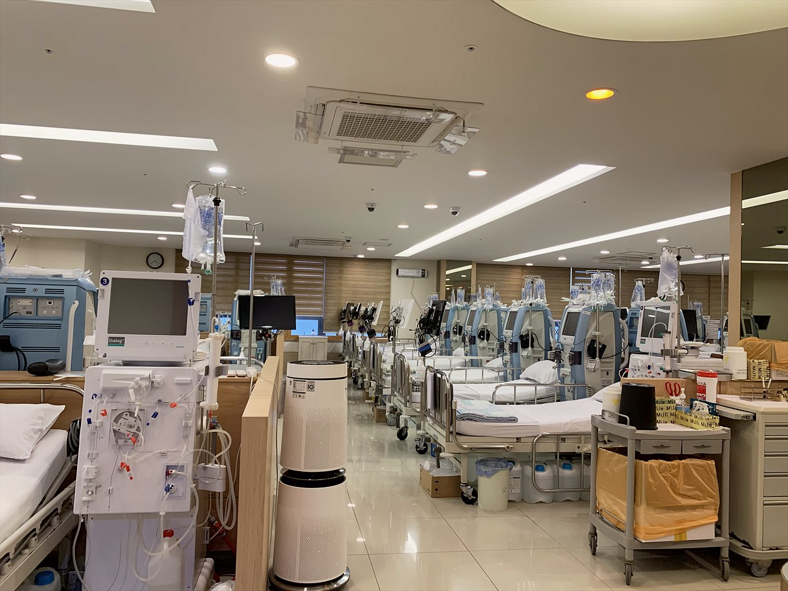
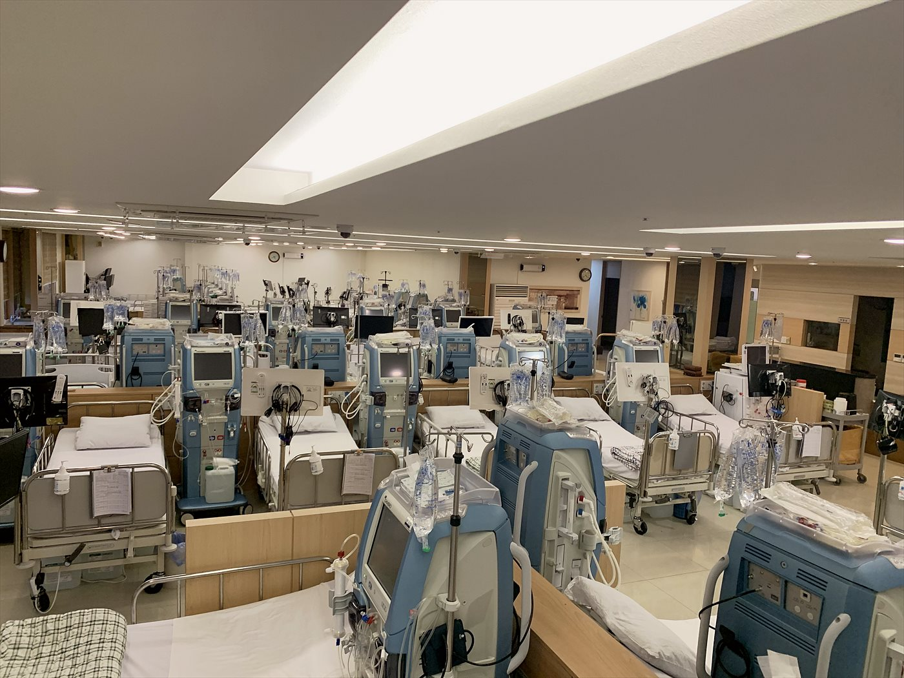

- 홈
- 인공신장실
일산 인공신장실 — 노승현내과의원
2003년부터 주엽동에서 운영해 온 혈액투석실입니다.
투석 처방부터 투석 중 관리까지, 투석 환자를 오래 봐온 의료진이 직접 담당합니다.
인공신장실 운영 원칙
혈액투석은 주 2~3회, 회당 약 4시간을 몇 년씩 이어가는 치료입니다. 장비의 성능만큼 중요한 것이 투석 중의 관찰과 개인별 처방입니다. 노승현내과의원 인공신장실은 다음 세 가지를 기준으로 운영합니다.
- 의료진의 상시 관리 — 투석 중 혈압 변화와 몸 상태를 간호사 스테이션에서 가까이 확인하고, 이상이 있으면 즉시 원장 진료로 연결합니다.
- 개인별 투석 처방 — 정기 혈액검사를 바탕으로 투석 시간·제거 수분량·약물(조혈제 등)을 환자마다 조정합니다.
- 편안한 환경 — 내 집같이 편안한 투석실을 지향합니다. 오래 다니는 치료일수록 환경이 치료의 일부입니다.
처음 오시는 분 — 투석 시작·병원 이동 절차
| 구분 | 절차 |
|---|---|
| 처음 투석을 시작하는 분 | 신장내과 진료 → 검사 결과 확인 → 투석 시작 시기·방법 상담 → 동정맥루 준비 안내 → 투석 일정 배정 |
| 다른 병원에서 옮기는 분 | 전화 상담(031-924-0875) → 기존 병원의 소견서·검사기록 지참 → 투석 일정 배정 (대부분 간단히 이동 가능합니다) |
| 여행·출장 임시투석 | 이용 날짜·기존 투석 기록 확인 후 일정 배정 → 방문 투석 |
※ 투석 일정은 병상 상황에 따라 조정될 수 있으니 내원 전 전화로 확인해 주세요.
인공신장실 둘러보기





자주 묻는 질문
투석 중에 의사 진료를 받을 수 있나요?
네. 원장이 원내에서 진료하므로 투석 중 혈압 이상, 몸 상태 변화가 있으면 바로 확인합니다. 투석 환자의 정기 처방·검사도 투석 일정에 맞춰 함께 진행되어 별도로 내원하실 필요가 줄어듭니다.
다른 병원에서 옮기려면 복잡한가요?
생각보다 간단합니다. 기존 병원에 이동 의사를 말씀하시고 소견서와 최근 검사 기록을 받아 오시면, 일정을 배정해 이어서 투석하실 수 있습니다. 전화로 먼저 상담해 주세요.
보호자가 함께 있어야 하나요?
투석 중에는 의료진이 상주하므로 보호자가 상시 대기하실 필요는 없습니다. 거동이 불편하신 분은 내원·귀가 시 동행을 권합니다.